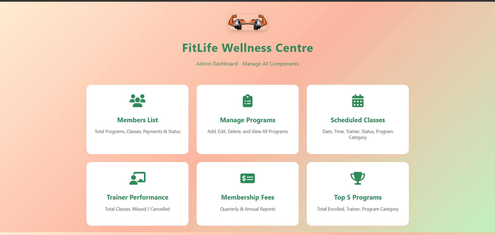
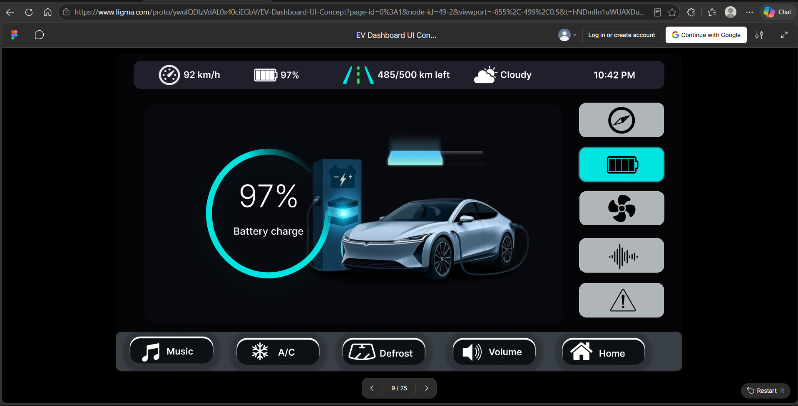
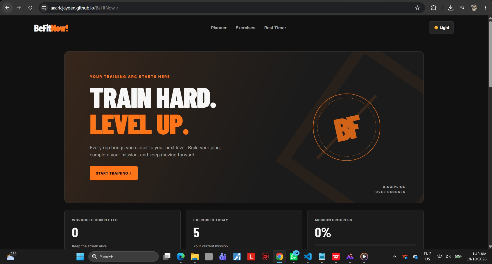
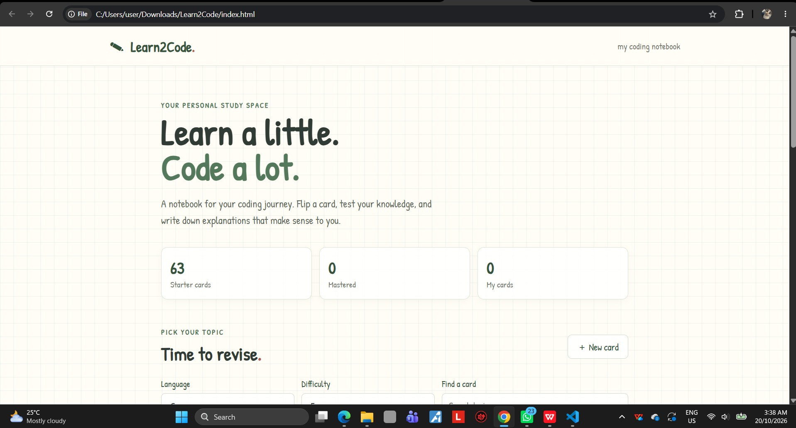

Programming
Building interfaces, application logic, and practical coursework projects.
JavaC++JavaScript
PHPHTMLCSS
[ APPLICATION_LAYER ]
guest@jaydenaaric: whoami?
NETWORK COMPUTING STUDENT
A technology enthusiast exploring software development, networking, IoT, and creative solutions to real-world problems.
01 // profile.txt
A quick look behind the keyboard.
01 class Jayden:
02 location = "Kuching, Sarawak"
03 study = "Network Computing"
04 interests = [
05 "Software Development",
06 "IoT & Networking",
07 "Creative Technology"
08 ]
09 # Always learning something new.
Curious by nature. Builder by practice.
I'm a Network Computing student at Universiti Malaysia Sarawak (UNIMAS) with a background in Electrical Engineering (Communication). I enjoy turning ideas into practical projects and learning how software, devices, and networks work together.
My experience includes academic software projects, an IoT medicine dispenser, and industrial training exposure to energy and utility operations. I'm looking to keep building my technical skills through hands-on projects and collaboration.
02 // toolkit.json
Tools and topics I'm learning and working with.
Building interfaces, application logic, and practical coursework projects.
Connecting devices, thinking through system design, and monitoring data.
Documenting work, collaborating on assignments, and improving usability.
03 // repositories/
A few builds, experiments, and university projects.
An ESP8266-based dispenser concept with scheduled dispensing, servo motor control, reminders, and remote control through a web or mobile interface.
A Java GUI project focused on clean energy awareness, with interactive screens,quizzes, progress, badges, and a leaderboard.
A PHP-based web project concept for fitness-related content and user interaction, developed as part of coursework.

[ ADD PROJECT IMAGE ]A Human-Computer Interaction (HCI) project focused on designing an electric vehicle dashboard interface with intuitive navigation, clear information presentation, and a user-friendly experience.

[ ADD PROJECT IMAGE ]A fitness website featuring workout planning, exercise tracking, a rest timer, and progress statistics.

[ ADD PROJECT IMAGE ]A collection of small C, C++ and Java programming exercises focused on understanding programming fundamentals, problem-solving, and writing efficient code.

[ ADD PROJECT IMAGE ]TIP: Replace each sample image path and repository link with your own.
04 // timeline.log
The path that brought me here.
Network Computing
Studying computing, networking, and related technologies through coursework and team projects.
Diploma in Electrical Engineering (Communication)
Built a foundation in electronics and communication systems, including an IoT medicine dispenser project using ESP8266.
Industrial Trainee
Gained exposure to transmission and distribution operations, protection and control, smart meter installation, customer care, billing, and technical support across assigned units.
05 // connect.sh
Have a project, internship opportunity, or idea to discuss?
guest@jayden:~$ ./send_a_message
[OK] Waiting for connection▋